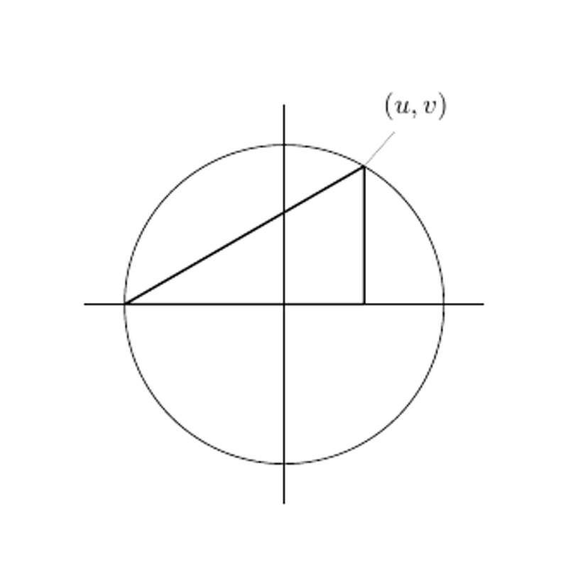

All of Pythagoras's Friends
March, 2018
A lot of the reason I read a particular textbook has to do with its portability. I've got a lot of moving around to do over the course of the day. If I want to kill the commute time, reading has always been my go-to. Reading on the bus is kinda nice, but if you've got a text that's a little too large, it can be prohibitive. Not to mention the fact that you've got to carry it around all day. Fortunately, there are a plentitude of texts that fit right in your pocket! The one I picked off the shelf today is called Introduction to Elliptic Curves and Modular Forms, by a guy named Neal Koblitz. He's a cryptographer at the university of Washington, and an adjunct faculty member here at Waterloo.
I don't actually know any number theory, though. So this book has been an adventure. I've had to brush up on some definitions, sit and ponder a few things. The first problem I worked out today had to do with primitive Pythagorean triples, which is a 3-tuple of intergers $(X,Y,Z)$ such that $X^2+Y^2=Z^2$, with none of the intergers sharing a common factor. We suppose that $a>b$ without loss of generality, and say that they're not both odd, and relatively prime. The problem is to show that, given the relations
$$ X=a^2-b^2,\, Y=2ab,\, Z= a^2+b^2$$
form a triple so-described, and that all primitive Pythagorean triples take this form. Showing that this is formulation of $(X,Y,Z)$ is a triple is simple, all that's needed is to recognize that these values fulfill the Pythagorean theorem. Showing that they form all primitive solutions is a little trickier. Letting both $a$ and $b$ be even, we see that $Y$ and $Z$ are no longer coprime. Similarly, if both $a$ and $b$ are odd, all $(X,Y,Z)$ become even, and thus no two of them are coprime. Thus, we need one of $(a,b)$ to be odd, and the other even.
The reason we know all primitive triples are found this way is the most interesting part. The easiest way to see it is to draw a picture:

Re-paramaterizing from $$ X=a^2-b^2,\, Y=2ab,\, Z= a^2+b^2$$ to $$u=\frac{X}{Z},\,v=\frac{Y}{Z}$$, we see that following the Pythagorean theorem leads us to know that $u^2+v^2=1$, naturally leading us to a parametrization of the unit circle. Cycling through the intergers for $a$ and $b$ gives us all possible Pythagorean triples.